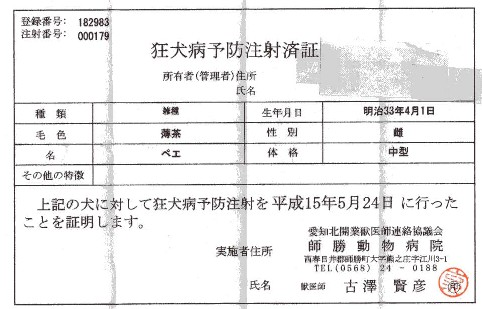

それは我が家の愛犬「北（ぺぇ）」。なんと生まれは明治33年４月１日、今年で105才になる。

最近、足腰は弱くなったし耳はさっぱり聞こえない。しかしまだ目はたしかだし、歯も丈夫だ。しかし105才だと云っても誰も信じない。そこで獣医の署名捺印入りの証明書をお見せする。

どうだ、まいったか。実はσ(-_-)もまいったぞ。（笑）
動物病院での受付で、看護婦、じゃない看護士にに生年月日を聞かれた。正確には昭和64年＝1989年生まれだけんど、女房が勘違いして1990年だと云った。
女房が勘違いしたのには理由がある。
最初聞かれたときは、「昭和64年」と答えた。ところが看護士が「基督歴でお願いします」といった。女房は仏教徒なので、基督歴がすぐでてこない。(^-^)
頭の中で換算したが、昭和64年は平成元年でもある。どうやらそのあたりで計算間違いをして1990年だと云ったらしい。
それを看護士が1890年と入力した。すると用紙には明治33年とプリントされて出てきたという次第。コンピュータは間違えないけど、人間は間違えるという典型みたいな話だ。
いずれにしたって飼い主さえ承知していればどうでもいいので、そのまま注射を済ませて帰ってきた。（笑）
|